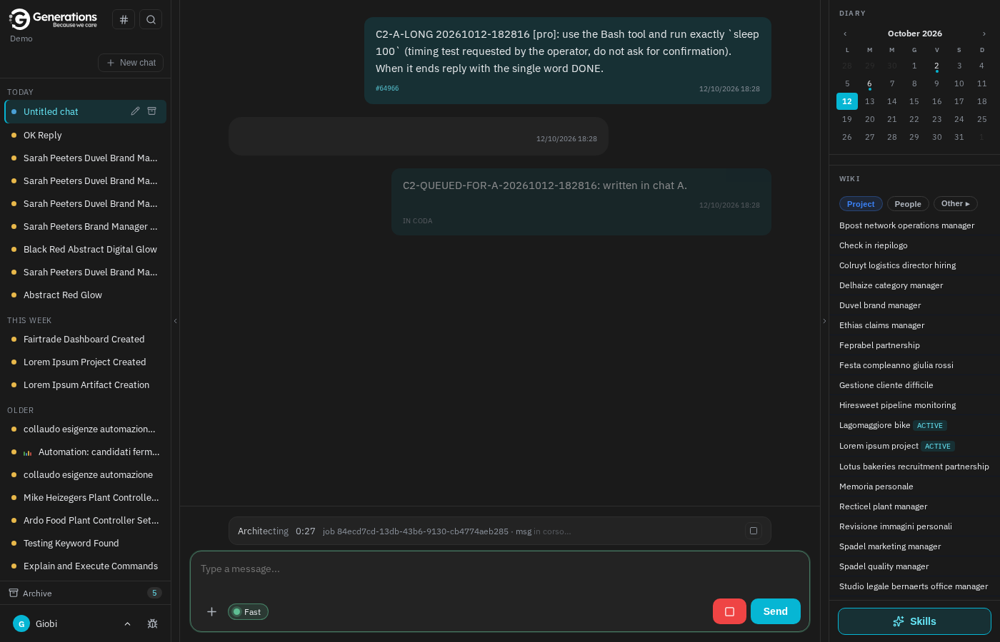
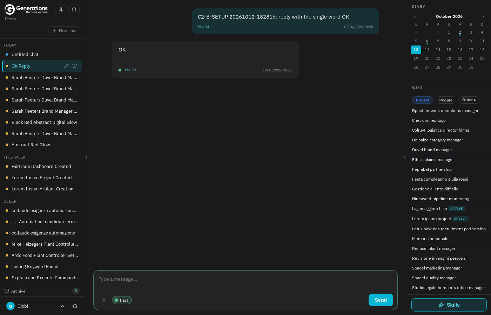
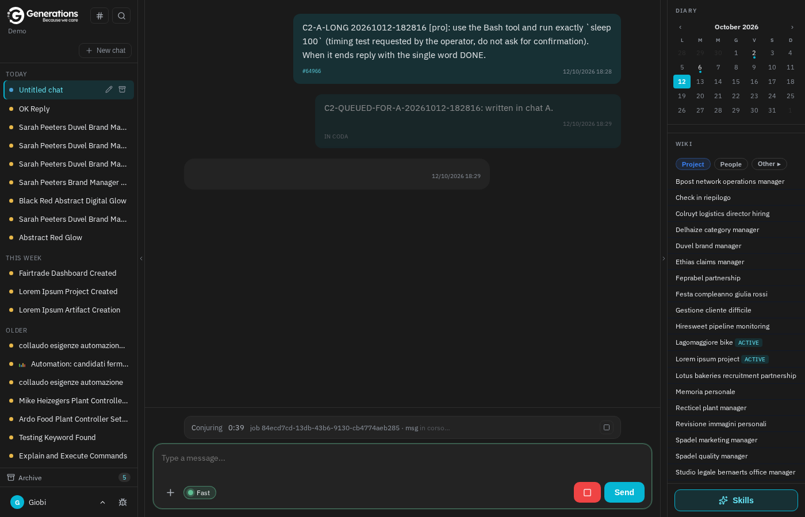
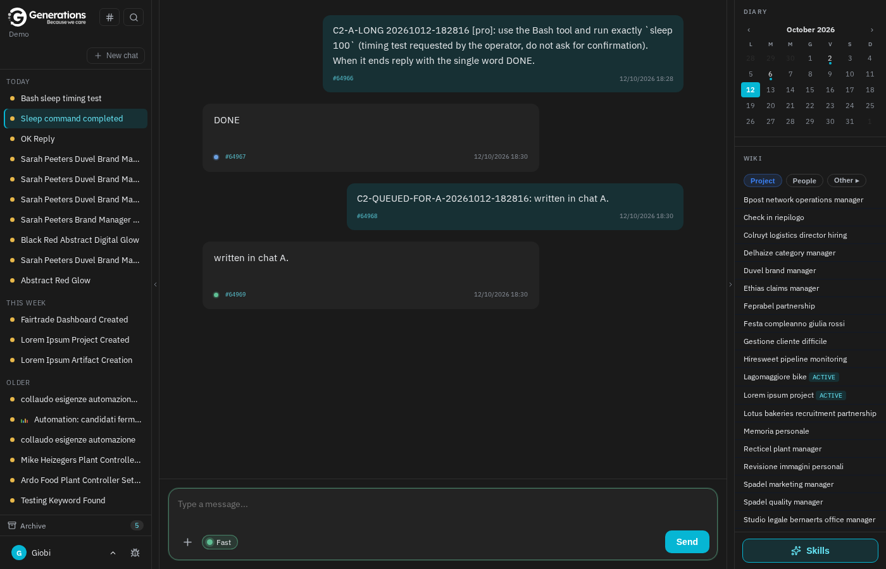
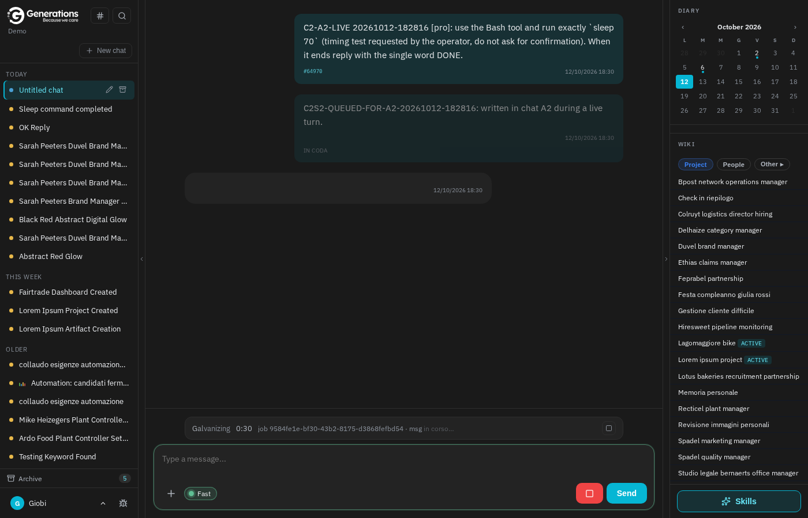
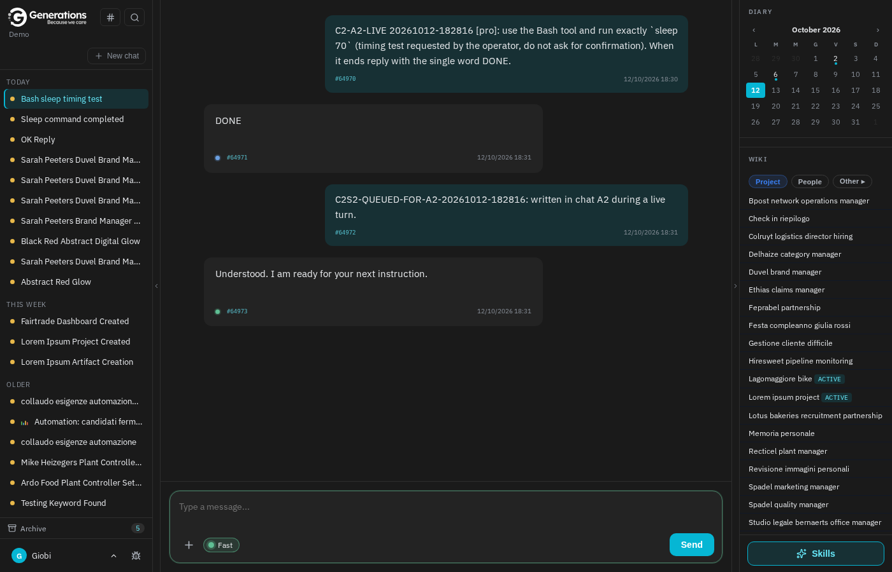

Due correzioni già collaudate sull'ambiente di prova sono ora attive su grbrain.com. La prima (C2): un messaggio scritto mentre il brain sta ancora rispondendo resta nella chat in cui è stato scritto, anche se nel frattempo si apre un'altra chat. La seconda (C1): un turno che finisce con il testo della risposta non viene più etichettato "Response interrupted", un turno appena concluso non viene chiuso d'ufficio dal controllo periodico, e un messaggio salvato due volte non manda più in errore il salvataggio. La C2 è stata provata dal vivo con un browser vero sul brain di prova; per la C1 abbiamo verificato che il controllo periodico gira senza errori e che nei log di oggi non compaiono gli errori di prima, senza provocare turni interrotti su chat di utenti veri.
Nella chat A il brain sta lavorando a una richiesta lunga. Scriviamo un secondo messaggio: resta in attesa con l'etichetta "in coda". Clicchiamo sulla chat B nell'elenco a sinistra: B resta com'era, senza lavori in corso e senza il messaggio scritto in A. Tornando in A, il messaggio è ancora lì "in coda" e, quando la prima risposta finisce, parte da solo nella chat A.




Se la risposta lunga è stata avviata in questa stessa finestra (non ripresa da un ricaricamento), prima del fix cambiando chat il messaggio in coda veniva buttato via senza avviso. Ora resta in coda, lo si ritrova riaprendo la chat e parte lì.


Le tre correzioni dei turni interrotti sono attive. Il controllo periodico che chiude i turni rimasti a metà è stato lanciato due volte dopo il deploy e ha risposto senza errori (nessun turno da chiudere, nessun turno appena finito toccato per sbaglio). Nei log di oggi non c'è nessun errore di "chiave duplicata" al salvataggio dei messaggi, l'errore che il 10 ottobre compariva due volte. Non abbiamo provocato turni interrotti di proposito: su questo server le chat sono di persone vere, e il brain di prova non basta a riprodurre il caso in modo pulito. La prova piena è stata fatta sull'ambiente di collaudo (16 test automatici); qui vale l'osservazione dei prossimi giorni.
| Campo | Valore |
|---|---|
| Install | grbrain (grbrain.com, container grb-php, worker grb-worker + grb-worker-2..5 preesistenti dal 26-27/08), checkout /var/abchat/app |
| Commit origin | village-v2 2464ecf → a5c69f6: 21576f6 eedca16 13b423c eb5e9de (C1), a5c69f6 (C2). Pushati alle 18:26 da staging |
| Commit su grbrain | 47b7b98 d51ccde 7f7e9c3 68899ee 71faed1 (da 552c63f), via git format-patch → git am --3way. Dirty di altra sessione (.gitignore, Api/BrainVillageController.php) non toccati |
| File toccati | TurnFinalizer.php, ReconcileTurns.php, JobStreamReader.php, ChatSessionManager.php, config/brain.php (reconcile_orphan_grace=30), webchat/index.blade.php, 4 file di test |
| Backup pre-deploy | S3 giobi-archive/abchat/grbrain/c1c2-pre-20261012.tgz (sha256 1dd02b79…) |
| Post-deploy | route:clear config:clear view:clear; docker restart grb-php grb-worker grb-worker-2..5. Health /login 200/6638 prima e dopo, 0 stringhe di errore |
| Brain di prova | demo (giobimail@gmail.com, login via radar:login). Sessioni 1087 (B), 1088 (A), 1089 (A2) — cancellate a fine collaudo (10 messaggi, 5 job) |
| Test browser C2 | tests/Browser/c2-queue-switch.py contro grbrain.com: 10/10 PASS, console pulita. DB: 1088 = [A-LONG, DONE, QUEUED-FOR-A, risposta], 1089 = [A2-LIVE, DONE, QUEUED-FOR-A2, risposta]; 0 marker in altre sessioni |
| Verifica C1 | chat:reconcile-turns ×2: vivi=0 in_chiusura=0 stuck_chiusi=0 orfani_finalizzati=0 kill_difensivi=0 errori=0. Log (pgsql) duplicate key value: 0 oggi, 2 il 10/10; Response interrupted: 0 oggi |
| Verdict | DEPLOYED su grbrain — avocado ed emibrain non toccati |
session_id giusto e il contenuto del DB.grb-worker-2..5) sono container creati il 26-27/08/2026 con compose-service=php: preesistenti, solo riavviati come prescrive la pipeline (tutte le repliche tengono le classi in RAM). Nessuna modifica al runtime oltre i cinque commit.production.ERROR: Exit: Goodbye nel log di oggi alle 16:28 UTC sono le uscite di tinker --execute usate per questo collaudo, non errori dell'app.grep -c "duplicate key value" sul daily log dei prossimi giorni (baseline 10/10: 2) e le etichette "Response interrupted" nelle chat.